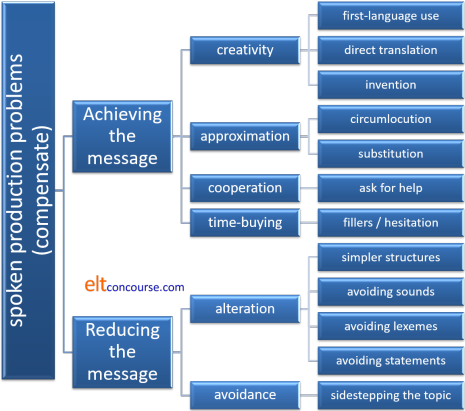
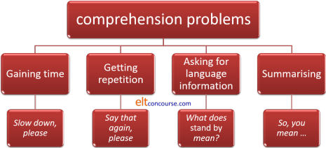

Communicative strategies and tactics in spoken language

There are two essential guides to speaking skills on this site (both of which will open in a new tab):
- an overview of speaking skills: what makes speaking difficult?
- teaching speaking skills: how can we make it less difficult?
What follows assumes for the most part that you are familiar with the contents of those guides which cover the basics of speaking and teaching speaking.
Because we are taking a functional approach here, it is as well
at the outset to remind ourselves of the sorts of functions that we
use. There is a list of nearly 70 in
the pre-service guide to functions which you may like to consult
(new tab).
The overarching categories (which often overlap) are:
- The descriptive function: giving and understanding factual
information. For example:
Can you tell me where the station is?
It's getting late
I'm taking the train home
I can't help you
etc. - The expressive function: relaying and understanding of
information about the speaker's feelings, preferences and ideas.
For example:
I'm not feeling well
I really don't like that man
I am not even going to try
etc. - The social function: establishing and maintaining social
relationships, especially roles and power structures. For
example:
Can I help you, madam?
Anything else?
Good morning officer. How can I help you?
etc.
 |
Interaction is reciprocal |
Speaking, unless you are doing something quite unusual such as
presenting to an audience who cannot interrupt or making a
recording, is a two-way process. By its nature it is
reciprocal so, as well as considering how speakers structure what
they say, we shall also take into account what the hearer may do to
manage the interaction.
In particular, we shall consider the strategies which non-native
speakers use (or can be taught to use or avoid) when they are
interacting orally with others.
We saw, for example, in the essential guide to what speaking is that
both parties to a conversation will use a response move to construct
a further initiation in order that the conversation does not grind
to a halt. To remind you of what is meant, compare these two
made-up dialogues:
| Interaction A | Interaction B |
|
Welcome home. Did you have a good day? Yes thanks. Did you enjoy lunch with Mary? Yes. Is she going to resign? I think so. I see. |
Welcome home. Did you have a good day? Yes thanks. How was yours? Oh pretty good. I got some gardening done. Did you enjoy lunch with Mary? I noticed how tidy it looked. Yes. Mary's always good company, isn't she? Oh yes. Is she going to resign? I think so. I'm not sure she has finally decided. I see. When does she have to make up her mind? |
It isn't difficult to see that Interaction B is likely to continue but Interaction A has ground to a halt. The reason is quite simple:
- in Interaction A, the second speaker simply responds to the
first speaker's initiations.
This forces the second speaker to take on the onus of the conversation and she will get pretty frustrated. - In Interaction B, the second speaker responds but also
initiates in the same move.
This means that both speakers are taking responsibility for the conversation's progress, and that is what keeps the conversation alive.
Learners of English often report that the native speakers they
encounter are reluctant to hold conversations with them. If
they are acting in the way the second speaker is behaving in
Interaction A, that is not surprising.
This is, naturally, not a phenomenon confined to English. All
speakers of whatever language cooperate in keeping interactions
alive until one of them signals the end but people do not
automatically transfer their communicative strategies into a
language they are learning.
Being aware of the need to initiate as well as
respond in the same move is a (some say, the)
critical communicative strategy.
 |
Tactics in communication |
The difference between a tactic and a strategy is slightly
obscure and dictionary definitions of the terms are generally very
similar, both referring to actions intended to achieve aims.
Here, we will use the term strategy to refer to an action designed
to achieve a long-term aim (such as keeping a conversation going)
and tactic to refer to shorter-term aims (such as saying what you
mean).
In chess, a tactic is what you utilise when there's something to do,
a strategy is what you employ when there's nothing to do.
In what follows, we are talking mostly about tactics but do not be
alarmed if others refer to them as strategies.
The line taken here is to divide tactics into responses to
productive and receptive issues but we should always bear in mind
that speakers employ both types almost simultaneously.
Conversations are often fast-moving events with overlapping
contributions and demands.
For the purposes of analysis and a teaching agenda, however, it
makes sense to separate the tactics.
 |
Spoken language |
In what follows, we are mostly concerned with informal spoken
language. In formal situations, such as chaired meetings,
academic seminars, presentations and so on, there is little call for
the skills discussed here because who speaks, when they speak and
what they speak about is likely to be controlled.
Informal encounters are another matter and it is in these that
communicative strategies and tactics become very important if the
conversation is not to go off track, grind to a halt or offend
someone.
Here, we will follow Cook, 1989, who suggests the following five features are the defining ones of informal oral encounters:
- Informal conversation does not follow a set task. Neither side of such exchanges has a particular end in sight and no agenda is set. Compare this, for example, to a workplace meeting which may, indeed, be informal and require good turn-taking skills but which will also have some kind of agenda to follow and task to achieve, however vaguely that is defined. This is a register rather than a style issue but they are connected.
- Power relationships tend to be fairly equal. If they are not, tactics may be of little use because one participant will be able to run the show. Inequality in participation is often a feature of some registers.
- There is usually a small number of participants. Even in large gatherings, informal conversations tend to be in small groups of only two, three or four people. Anything larger and we are in the realms of speeches or plenary addresses which, apart for barracking from the floor, do not usually require any special tactics.
- Turns are short. Sometimes, in informal conversation,
turns may even consist only of a single word or phrase. In
more formal settings or those which have an agenda, turns are
often quite long and the tactics and strategies discussed here
do not apply.
We are not talking about back-channelling here because that is what happens during turns rather than between turns. - The talk is intra-personal. Its purpose concerns the participants and it is not intended to be overheard or directed at a wider audience outside the participants. In some registers, the participants in the exchange may be confined to two or three people but they know that their contributions are being heard by and are, therefore, intended for, a wider, often silent audience.
So, depending which kind(s) of skills you want to teach, develop and practise, you need to make sure that the context in which presentation and practice take place is in line with the kinds of skill you want to be the focus. Read on for more.
 |
Productive issues: compensation and reduction |
The essential guide to speaking explains some of the reasons that
speaking is a tough skill to master and these include time
pressures, lack of familiarity with the topic, audience size,
unpredictability and the need for real-time action. Few of
those pressures play a role when we read or write, of course.
What we are talking about here are the ways that learners of English
can be taught to deploy tactics to compensate for a
lack of skill or a lack of language.
Native speakers of a language do these things unthinkingly and
automatically but, as we saw with interaction shapes above, people
do not always transfer the skill to a second language.
Here's an overview of what follows in slightly more detail with some examples of what is meant and some thoughts on teaching the skills.

Achievement or reduction? |
Sometimes a reduction (in weight, expense work, energy use etc.)
is also an achievement but when it comes to communicating in a
foreign language we need to achieve our communicative aims not
reduce communication to what we can say.
Achievement tactics are, therefore, the ones we should be teaching
so that our learners are not thrown back on having to reduce what
they want to say or simply abandon the effort altogether.
Creativity |
One compensating factor for lacking the right word or structure to encode our thoughts is to create language as we go along. This is usually not a teachable skill (or, arguably, one which we should be teaching) but it can be quite effective. We do it in three main ways:
- Simply inserting first language terms into our conversation
in the hope that the hearer will understand them, For
example:
I'll need the er, erm ... aspirateur / aspiradora / Staubsauger to get the carpet clean
respectively these are the French, Spanish and German words for vacuum cleaner but, using with the word in the learner's first language and combining it with its purpose may allow the hearer to understand.
Sometimes this works well, especially when inserting words from languages related to English and pronouncing them in what is hoped is an English way. For example, a learner who does not know the English word conventional may guess that it is derived from the same source as the word in the mother tongue and produce (again for the same three languages):
That would be conventionnel(le) / convencional / konventionell, wouldn't it?
and, providing the pronunciation is altered slightly to Anglicise the word, most native speakers of English would have no trouble understanding what is meant. - Directly translating a word or phrase in the hope that it
might be right or at least understandable. For example, a
French speaker hunting for an expression to mean not being vague
and euphemistic might produce:
call a cat a cat
on the principle of translating
appeler un chat un chat
directly into English. The correct term (call a spade a spade) is not so different that a native speaker of English cannot grasp what is meant.
This is a perilous tactic in many cases, however, as a German speaker, trying to render Staubsauger (vacuum cleaner) in English may produce dust sucker which does require a mild leap of the imagination for a native speaker to understand without a clear context and a bit of co-text. - When all else fails, some non-native speakers (and native
speakers, too) may fall back on inventing a word or phrase which
just might be right. For example:
Have you got an electric hole maker?
Is she talkable?
Have you got the dog's line?
I need to unskin the potatoes.
for drill, approachable, lead and peel respectively.
 |
Approximation |
Failing the mot juste (or exact word, if you prefer) many learners need to acquire two related skills.
- Circumlocution
In most dictionaries, this word means a deliberate attempt to be vague or imprecise but not in this field. Here, it means getting around a gap in one's knowledge in some way. For example:- Being unable to use a future perfect tense or select the
correct tense in a subordinate clause, a learner may say
something like:
No, she will leave before I will arrive
which is perfectly understandable to even an unsympathetic hearer. It is grammatically inaccurate but communicatively quite precise. - Not knowing exactly the right word for an implement, a
learner may contrive:
It's the machine for cutting food into small bits (food processor)
or
It makes liquid from fruit to drink (juicer)
and so on.
This is a teachable, and necessary, skill often involving the ability to use relative pronoun and adverb clauses such as:
It is the machine that gives you money in the street (ATM)
She is the person who shows you where to sit in a theatre (usher)
or
It is the place where you keep the book (shelf, library?)
Failing the relative clause structure, a simpler form to teach is the prepositional phrase for plus the -ing form so we get:
A thing for XXXing a YYY
etc.
So we arrive at:
The thing for cutting the grass in the garden
- Being unable to use a future perfect tense or select the
correct tense in a subordinate clause, a learner may say
something like:
- Substitution
A second form of approximation is the use of a substitute, usually a less precise one for the term one needs.- Often the substitute word is a hypernym which includes
the target word so we may encourage learners to acquire
words such as machine, vehicle, device, gadget etc.
so they can express ideas at least approximately in the hope
that context and co-text will make their precise meaning
clear. For example:
Can you repair this device?
The machine is not working
He drives a large vehicle
etc. - Another common device is to search for a synonym which
will express the meaning, albeit imprecisely. For
example:
I play a sport with other people (team game)
I found small jumping animals on the cat (fleas?)
The bed cover was dirty (sheet)
etc.
- Often the substitute word is a hypernym which includes
the target word so we may encourage learners to acquire
words such as machine, vehicle, device, gadget etc.
so they can express ideas at least approximately in the hope
that context and co-text will make their precise meaning
clear. For example:
Cooperation (exhortation and cohortation) |
There is a guide to suasion which includes some discussion of exhortation and cohortation on this site, linked below. Here, we are concerned with the tactic of persuading the hearer to help the speaker get over a gap in knowledge. There is a range of tactics that can be taught:
- Asking for translation
Frequently, communication will involve an interaction with someone who knows the first language of the speaker, however poorly, and speakers can call on that knowledge for help. Often, this tactic is combined with some form of circumlocution. For example:
What's the word for Staubsauger in English?
How do you say panier in English? You know, for carrying fruit and stuff.
What's the word for a portero in English? The man by the door. - Gesturing and miming
With some luck the item in question may actually physically be present or the action may have just occurred or is occurring at the time of speaking. Speakers can enlist the help of interlocutors by pointing to something, miming an action or referring to it. Again, circumlocution may also co-occur with this tactic. For example:
How do you say what he just did in English?
What's the word for that thing you used?
What thing is it when you do this to eggs? (miming whisk)
etc. - Asking for language data
Although many native speakers of any language are sometimes flattered to be asked language questions, many, too, feel embarrassed by them because they simply do not know how to explain things clearly. That's not the case if you are the informant, of course.
The selection of the sorts of questions that people are trained to ask needs to take this into consideration. There is very little point, for example, in asking a native English speaker something like:
What's the opposite of miniscule?
or
What tense do I use after wish?
because the answer will usually be vague, incomplete or wrong.
Keeping the question easy is, therefore, the priority so exponents such as:
How do I say the past of understand?
What's the opposite of pretty?
Can I say ... in English?
and so on.
 |
Fillers and hesitation devices |
There are a number of simple hesitation and filler devices which
native speakers use routinely when they need to think but are
unwilling to stay silent and run the risk of giving up a
conversational turn unintentionally.
They include:
- Noises
Meaningless in themselves, certain noises carry the communicative value of:
Please don't start a new turn, I'm thinking
and they include, for example:
err
um, um
erm
ah, ah
mmmm
ahm
and so on.
The noises people make differ from language to language. Many languages use a repeated schwa sound:
/ə ə ə ə ə ə ə ə ə/
as a hesitation device which may not be recognised for what it is or sound foreign to English speakers.
Other languages may use a rather strangled back-of-the-throat sound approximating to:
aaargh ... aaargh
which also sounds odd to English speakers or teeth-sucking noises such as
tja (roughly /tʃɑ/).
Nevertheless, if learners use the devices common in their own languages, the need for a little time will usually be recognised.
Advanced users of English often pick up the sounds by interactions with native speakers, learners below that level probably do not need to be taught them unless they want to sound a bit more English. - Prefabricated expressions
There is a wide range of these and a complete list is probably unobtainable. The commonest include:- like
much maligned as illiterate as in, e.g.:
He was like, angry, like and got like rude and everything - you know
as in
He was, y'know, there all the time and y'know waiting for her - actually
frequently used to signal a false start as in:
It was good ... er, actually, pretty wonderful actually - basically
an almost meaningless filler as in:
She was basically really happy with it but actually didn't want to pay for it basically - I mean
often as a signal of reformulation as in:
I was waiting for the bus er, I mean, it had just arrived and y'know it its always busy, I mean crowded at that time
- like
Prefabricated expressions do need to be taught and practised because they are not common across languages. If learners are not alerted to the differences, they will sound odd to an English-speaker's ear and may be misunderstood (and therefore interrupted). For example:
- Dialects of Arabic vary in the fillers used, ranging from words and expressions meaning by God, like, so, what's its name and more.
- Speakers of Chinese languages may use a filler which translates as that is and the phrase is uncommon in English in that role.
- Speakers of Slavic languages (especially Czech) may use simply as a filler (much as English speakers use basically).
- French speakers have a range to draw on and some parallel English fillers but they also include you see what I want to say, which is not recognisably natural in English.
- German speakers use teeth-sucking but also a translation of actually.
- Greek speakers may use good, good and so, so as a filler.
- Italian speakers may use well, then as a filler.
- Polish speakers sometimes use no, no as a filler.
- Spanish speakers may use the word for this as a filler, often repeated.
- Swedish speakers may use the Swedish words for only, therefore and what as fillers.
 |
Reduction and avoidance |
Faced with difficulties in finding the right words or grammatical structures, learners may reduce or abandon the message they had in mind. These two tactics are:
- Reduction
This is common when learners are faced with a structure they have not yet mastered but are aware of the concept they intend.
Four types of reduction are recognised (Bygate, 1987:47):- Simpler structural alternatives:
For example, instead of:
I wouldn't have done that if I had known what would happen
learners might opt for the much simpler:
I did it because I didn't know what would happen.
which expresses (more or less) the same thought but in a reduced way. - Sound avoidance:
Some sounds give learners great difficulties in English, usually because the sounds do not exist or do not exist in that combination in the learners first language(s). For example, many of the ordinal numbers in English have tricky final consonant clusters (fourth, fifth, sixth, seventh etc. in particular). Learners may simply find an alternative way to refer to these numbers (or remove the ordering from what they are saying) so, instead of:
It was her sixty-sixth birthday
a learner may opt for the slightly unnatural:
She was sixty-six on that day - Lexical avoidance:
If learners are aware of their own lack of vocabulary in a certain area, they may opt to speak more generally so instead of pursuing a conversation about gardening, for example, (with its wealth of register-specific language such as hoe, spade, mulch, mow, harvest etc.) they might prefer to bend the conversation to leisure activities in general where they feel on safer ground - Statement avoidance:
If learners believe they are unable to say precisely what they feel about something, they may prefer to alter their message to something they can say. So, for example, we may get:
The film was very good
instead of what is meant along the lines, perhaps, of:
I felt the film was very atmospheric.
- Simpler structural alternatives:
- Total avoidance
In extreme cases, the inability to express a thought in English despite options for altering the signal to fit current ability, may lead learners simply to sidestep the issue altogether, try to change the subject or fall uncomfortably silent.
Strategies for changing the subject, generally involving topic shifting-conjuncts such as:
On the other hand, ...
That reminds me ...
Speaking of ...
By the way ...
etc. are eminently teachable providing learner are made aware of the fact that we do not usually shift a topic completely but pursue a parallel and connected idea with the use of these conjuncts and practise them that way.
A better approach is to teach as many of the compensatory tactics as the learners can handle so the need for avoidance is minimised.
 |
Receptive issues: altering the incoming message |
Because, as was emphasised above, speaking is usually reciprocal
(that's what interactive means), it is important also to focus on
how learners may aid their comprehension by forcing facilitation
tactics on the speaker.
There are four ways to do this and here is the summary. Notes
and examples follow.

All of these tactics are very teachable but they need to be handled discretely at first before learners can use them in combination. Practising them can be quite enjoyable, especially if there are native-speaking guinea pigs to hand on whom to try them out. Failing that, the teacher has to provide the input that the learners can practise altering.
The tone and intonation that has to be practised with these tactics is very important because almost always they constitute interruption of a turn and can easily be perceived as rude or at least discourteous (see the guide to turn taking, linked below, for more). In the following examples, the speaker needs to sound tentative not assertive, so the intonation will generally rise along the utterance.
- Gaining time
Any interruption to gain time has to be done politely in order to avoid giving offence. The unaggressive, palm-outward, hand-up gesture is also important.
Simple exponents include:
I'm sorry. Could you speak a little more slowly, please?
Can you slow down a little? It's difficult for me to follow.
Please speak more slowly.
I can only understand if you speak more slowly, I'm afraid
and so on. - Getting repetition
The is a similar tactic to gaining time (and has a similar utility) so it could be practised at the same time.
Simply exponents include:
Can you repeat that, please?
Say again?
How's that again?
What did you say?
and so on. - Asking for language information
We noted above that native speakers are sometimes embarrassed and at a loss when asked to explain language issues but that is not always the case if the questions are well put and simple. For example:
Can you explain ... ?
Can you use another word for ... ?
I don't understand spadework. What does it mean?
Does it just mean hard work?
and so on. - Summarising
This is sometimes called interpretive summarising and is a way of both checking comprehension and getting some repetition and support. Examples might include:
So, as I understand it, ...
What you seem to be saying is ...
Am I right in thinking that ... ?
Have I got this right? I think you mean ...
etc.
 |
Selecting what to teach |
At the outset, it was claimed that the tactics which people use
to manage interactions are not confined to any one language.
They exist in all languages and cultures but the ways in which they
are realised linguistically varies quite considerably, sometimes
quite dramatically.
The aim of teaching is not, therefore, to teach the tactic per
se but to teach how to use the tactic in English.
Knowledge of the tactics exists in your learners (unless they are
very young) so that knowledge just needs to be activated and then
practised.
In all of the above, we have tried to include common examples of
exponents to use when teaching and practising but we make no claim
to any list being exhaustive.
When selecting a tactic (or even two) to teach, make sure that the
functions of the exponents you will introduce, practise and assess
directly target the tactic you are trying to activate. If that
is not the case, you will confuse the learners.
You need to select exponents which perform the function(s) which
match the targets of your teaching and practise them as thoroughly
as possible. Many exponents of simple functions are
prefabricated language chunks whose use cuts down considerably on
processing time (another bonus). However, they will not be
recalled as single chunks without a good deal of exposure and
repetition.
Selecting the correct exponents to suit the levels and needs of your
students is, of course, partly what you get paid for.
| Related guides | |
| speaking overview | for the first and simple guide to the skill |
| teaching speaking essentials | for the guide to some classroom tactics |
| assessing speaking | for a guide to a related area which is not considered at all here |
| communicative language teaching (CLT) | for the general guide to the area |
| suasion | if the term exhortation is puzzling you and you would like to learn more |
| turn taking | for the in-service index to a slightly technical related area |
| backchannelling | for the in-service index to another related area |
| pragmatics | for the theory underlying much of this guide |
| adjacency pairs | for a guide to this area |
| discourse index | for the in-service index to the area |
| skills index | for the in-service index to the area |
Reference:
Bygate, M, 1987, Speaking, Oxford: Oxford University Press
Cook, G, 1989, Discourse, Oxford: Oxford University Press
Other references you may find helpful (we did):
Brown, G & Yule, G, 1983, Teaching the Spoken Language,
Cambridge: Cambridge University Press
Bilbrough, N, 2007, Dialogue Activities: Exploring Spoken
Interaction in the Language Class, Cambridge: Cambridge University
Press
Hughes, R, 2002, Teaching and Researching Speaking, Harlow:
Longman
Luoma,
S, 2004, Assessing Speaking, Cambridge: Cambridge University
Press
Porter Ladousse, G, 1987, Role Play, Oxford: Oxford University
Press
Rogerson, P & Gilbert, JS, 1990, Speaking clearly: pronunciation
and listening comprehension for learners of English Student's Book,
Cambridge: Cambridge University Press